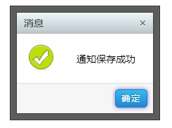
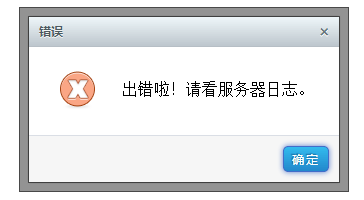
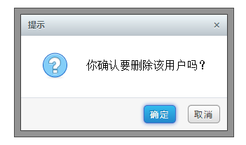
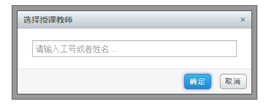

12.1 标准对话框 dialog.coffee
显示各种标准对话框
- $GDK.dialog.alert(succ, message, callback)
- $GDK.dialog.info(message, callback)
- $GDK.dialog.warning(message, callback)
- $GDK.dialog.error(message, callback)
- $GDK.dialog.confirm(message, callback)
- $GDK.dialog.prompt(message, callback, defaultValue)
info

error

confirm

prompt

12.2 自定义对话框 dialog.coffee
$GDK.dialog.open(options), 具体定义可以参考：artDialog 4.x
| Name | type | default | description |
|---|---|---|---|
| title | string | '消息' | 标题内容 |
| content | string/HTMLElement | 消息内容。 1、如果传入的是HTMLElement类型，如果是隐藏元素会给其设置display:block以显示该元素，其他属性与绑定的事件都会完整保留，对话框关闭后此元素又将恢复原来的display属性，并且重新插入原文档所在位置 2、如果没有设定content的值则会有loading的动画 |
|
| ok | Boolean/Function | 确定按钮回调函数。 函数如果返回false将阻止对话框关闭；函数this指针指向内部api；如果传入true表示只显示有关闭功能的按钮 |
|
| cancel | Boolean/Function | 取消按钮回调函数。 函数如果返回false将阻止对话框关闭；函数this指针指向内部api；如果传入true表示只显示有关闭功能的按钮 对话框标题栏的关闭按钮其实就是取消按钮，只不过视觉不同罢了，点击同样触发cancel事件 |
|
| okVal | string | '确定' | "确定按钮"文字 |
| cancelVal | string | '取消' | "取消按钮"文字 |
| button | Array | 自定义按钮。 配置参数成员： name —— 按钮名称 callback —— 按下后执行的函数 focus —— 是否聚焦点 disabled —— 是否标记按钮为不可用状态（后续可使用扩展方法让其恢复可用状态） 示例： 参数如：[{name: '登录', callback: function () {}}, {name: '取消'}] 。注意点击按钮默认会触发按钮关闭动作，需要阻止触发关闭请让回调函数返回false |
|
| width | Number/String | 'auto' | 设置消息内容宽度，可以带单位。一般不需要设置此，对话框框架会自己适应内容。 如果设置为百分值单位，将会以根据浏览器可视范围作为基准，此时如果浏览器窗口大小被改变其也会进行相应的调整 |
| height | Number/string | 'auto' | 设置消息内容高度，可以带单位。不建议设置此，而应该让内容自己撑开高度。 如果设置为百分值单位，将会以根据浏览器可视范围作为基准，此时如果浏览器窗口大小被改变其也会进行相应的调整 |
| init | Function | 对话框弹出后执行的函数 | |
| close | Function | 对话框关闭前执行的函数。函数如果返回false将阻止对话框关闭。 请注意这不是关闭按钮的回调函数，无论何种方式关闭对话框，close都将执行。 |
info
